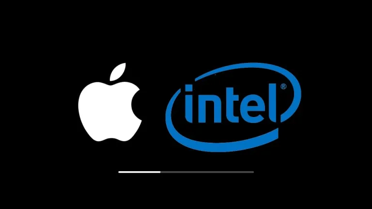
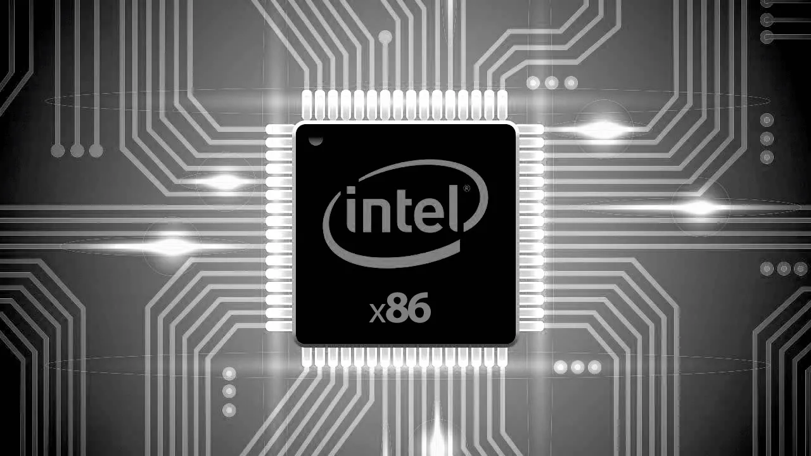
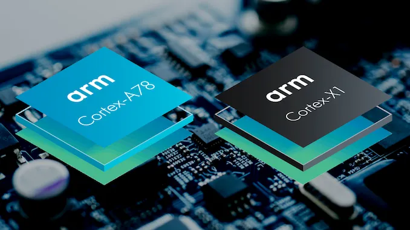
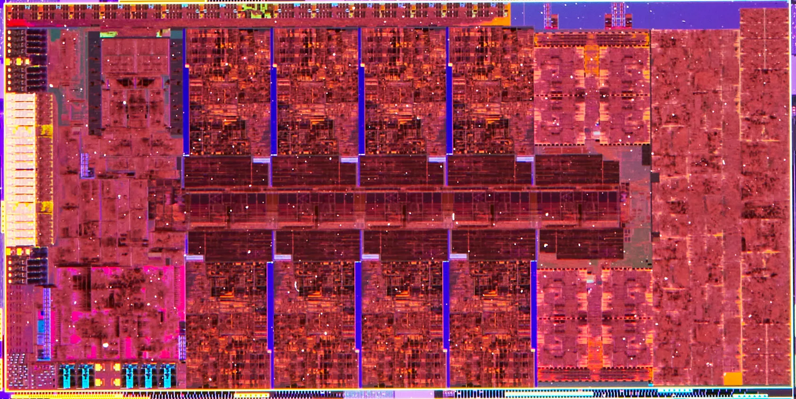

What are CPU Architectures & ISAs? ELI5
We all probably have heard them: ARM, RISC-V, CISC, x86, x64, AARCH64, AMD64… Why are there so many of them? Why do they sound so mathematical and scientific? And most importantly What do they even mean?
Here in this article I will try to clear the confessions about all the terms above. I will talk about CPUs, CPU architectures and instruction sets. At the end, you will have the fundamental understanding of their meaning and their place in this big tech world.
TLDR;
ARM (architecture)* An efficient CPU architecture. Uses RISC instruction set.
ARM64 (architecture): Extension of ARM. Support 64-bit memory addressing.
x86 (architecture): Intel’s own CPU architecture. Also used by AMD. Uses CISC instruction set.
x86_64 / x64 (architecture): Extension of x86. Supports 64-bit memory addressing.
RISC (instruction set): Reduced Instruction Set. Used by ARM and ARM64.
CISC (instruction set): Complex Instruction Set. Used by x86 and x86_64.
Intel (company): Uses x86 and x86_64 for their CPUs.
AMD (company): Uses x86 and x86_64 for their CPUs.
Apple (company): Uses ARM64 for their CPUs and chips.
Notes:
1. ARM is both a company and a CPU architecture.
2. ARM is more efficient since it uses RISC rather than CISC.
3. CISC instructions are decoded into smaller simple ones. This uses CPU power, thus less efficiency and more heat.
4. A program written for ARM will not work for x86 and vice-versa.
5. It's compilers job to create an executable for either ARM or x86.
6. The word "architecture" and "instruction set" is used interchangeably.
Introduction

Apple and Intel — Source: innovation-village.com
Let’s start with the biggest and most important one. As we all know CPUs are the heart of a computer. They do all the computation and work in 1s and 0s. Companies like Intel, AMD, Apple, Samsung, Qualcomm and MediaTek design their CPUs. Only some of them actually manufactures the CPU itself. Apple, for example, design their CPUs but the manufacturing itself is handled by the company called TSMC.
By design, every CPU has something called an instruction set. It is also called the CPU architecture. This instruction set is like a user-manual that tells the user (developer) how to “use” the CPU to do anything. It’s like an API reference but for CPUs.
x86 and x86_64

Illustration of Intel’s x86 Architecture - Source: blopeur.com
Intel, one of the biggest CPU makers, came up with a revolutionary CPU called Intel 8086. This bad boy laid the foundation of almost all modern CPUs. The people at Intel called the architecture on this CPU: x86. See the 86 there? Yeah, it comes from the Intel 8086.
The x86 architecture was so good that Intel still uses it on almost all of its CPUs. But the architecture itself evolved quite a bit. The modern version of the x86 is called x86_64. Some call it simply: x64. This version has more complex instructions. It also support 64-bit memory addressing.
CPUs that use x86 or x86_64 (almost all modern desktop CPUs):
Intel 5, 6, 7, 8, 9, 10, 11, 12, 13th gen
AMD Ryzen 1000, 2000, 3000 series
ARM

ARM Architectures — Source: blogs.salleurl.edu
A company called Acorn, wanted a more efficient x86 architecture to be used with low-power CPUs. They designed and created the first ARM architecture that ran way better than they expected. It ran so efficiently that the prototype CPU consumed only about 1/100th of the required power. AND the architecture was simpler! What’s not to love?
The ARM architecture evolved quite a bit. From ARMv1 to ARMv9… Nowadays ARM supports 64-bit memory addressing. They call it the ARM64, but people still call it simply: ARM.
Acorn later became a CPU architecture company that sells people CPU designs. It has designs like ARM Cortex A53, Cortex A7 and ARMv9. As you can see the company ARM does not actually make CPUs, they only sells blueprints for creating one. Apple, for example, is one of the biggest friends of ARM. They work VERY closely. ARM gives Apple full control of their ARM architectures (for a price of course).
At first, ARM stood for Acorn RISC Machines. But now, it stands for Advanced RISC Machines.
CPUs that use ARM or ARM64 architecture:
Apple A chips (all modern iPhones)
Apple M1 and M2 chips
NVIDIA GTX and RTX GPUs
STM CPUs for embedded world
Chips on Raspberry Pi's and Arduino's
Samsung Exynos chips
Snapdragon chips
Instruction Set
RISC-V Instrucion Set — Source: riscv.org
In the older days every CPU had it’s own instruction set. It was a mess! But soon they realized this gets out of control very quickly and was not sustainable. The creation of an instruction set is time-consuming and costs BIG MONEY. So people at IBM and other big companies created architectures to solve this issue. The result were: CISC and RISC.
CISC

Intel i5 12600K Architecture Which Uses CISC — Source: techpowerup.com
CISC, Complex Instruction Set, started with the popular Intel 8086 CPU. This instruction set has many complex “operations”. These complex operations are actually improves writability for the developer. Developers are now able to do more complex operations with less code. But everything has a cost…
The complex operations hurts the CPU performance. Yes, it helps the developers but not the CPU. The CPU needs to “translate” what the developer meant. It does that by diving the complex instruction into smaller parts. This process is called “decoding”. More simply: The CPU “decodes” the complex instruction into smaller easy-to-execute operations.
Most of the modern Intel and AMD CPUs use CISC or some version of it.
RISC
RISC-V Organization Logo — Source: riscv.org
RISC, Reduced Instruction Set, started with IBM 801 CPU. It has less instructions compared to CISC. But, that’s the point of RISC. By having smaller and simpler instructions, it removes the need for “decoding”. No decoding means no unnecessary CPU operations and thus, more efficiency.
Final Words
I am still learning the topic of CPU architectures, how it is used in software engineering and all the things related. I will try to update and correct this article whenever I learn something new or find a mistake. I hope that you liked my article and learned something new. If you spot any errors or mistakes please let me know.
Take care ❤

Thanks for reading & Take care ❤
Follow me on X (formerly Twitter), if you like my works that is >.<